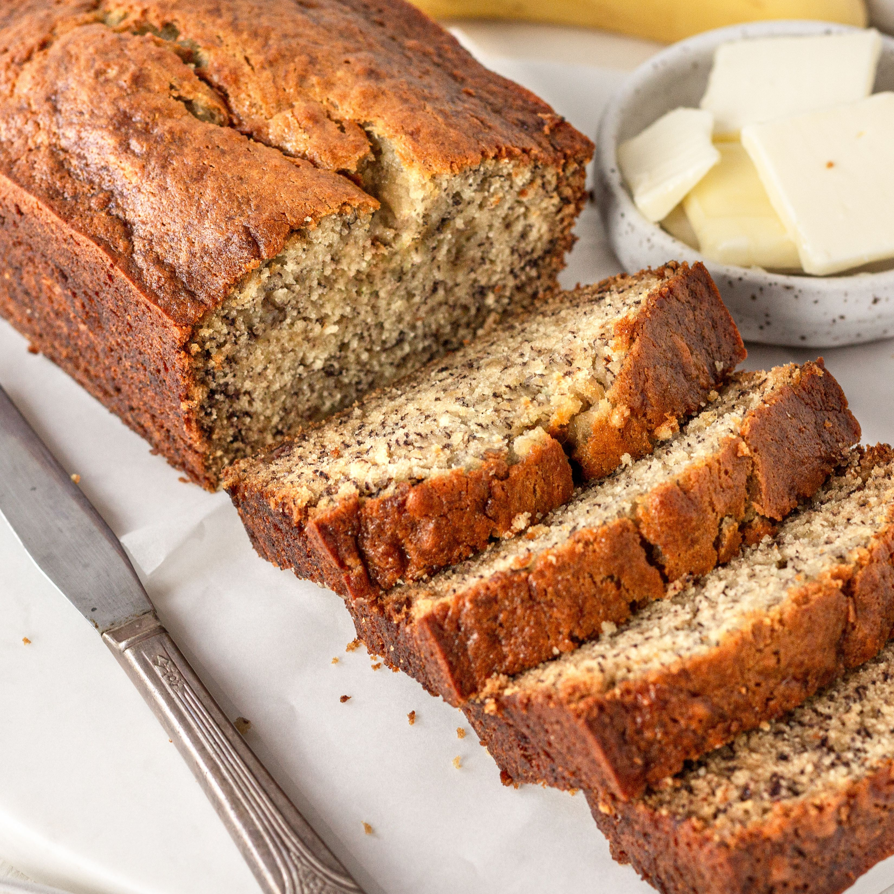

High-Protein Banana Bread

Description
This High Protein Banana Bread is naturally gluten free and packed with protein! Moist, tender, easy to make and so delicious! The best snack or breakfast!
Importance of Protein Powder
Protein powder has been shown to increase muscle mass, improve strength and power and decrease fat mass. Unfortunately, many of us are stuck in a rut of using protein powder on repeat in our morning smoothie. You might be surprised to learn that protein powder is quite versatile, and there are many ways to use it besides your morning smoothie – including this protein-rich banana bread recipe.
Ingredients
- 1 - serving nonstick cooking spray
- 1 1/4 - cups oat flour
- 1/2 - cup white sugar
- 1/2 - cup chopped walnuts
- 2 - scoops chocolate protein powder (such as Premier Protein®)
- 3 - teaspoons ground cinnamon
- 1 1/2 - teaspoons baking powder
- 1/2 - teaspoon baking soda
- 3 - overripe bananas, mashed
- 1/2 - cup unsweetened applesauce
- 1/4 - cup milk
- 2 - large egg whites
- 3 - teaspoons pure vanilla extract
Steps
- Preheat the oven to 350 degrees F (175 degrees C). Spray a 9x5-inch loaf pan with cooking spray.
- Mix together oat flour, sugar, walnuts, protein powder, cinnamon, baking powder, and baking soda in a medium bowl.
- Mix together mashed bananas, applesauce, milk, egg whites, and vanilla extract in a large bowl. Slowly add flour mixture to banana mixture; stirring until just combined. Transfer batter into the prepared loaf pan.
- Bake in the preheated oven until top of bread springs back when lightly pressed and a toothpick inserted into the center comes out clean, 35 to 40 minutes. Cool in the pan for 10 minutes. Transfer to a wire rack to cool completely.